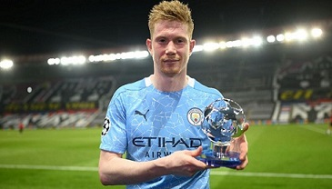

Kevin De Bruyne
belgijski piłkarz, występujący na pozycji pomocnika w angielskim klubie Manchester City i w reprezentacji Belgii. Jest powszechnie uważany za jednego
z najlepszych piłkarzy na świecie. De Bruyne rozpoczął swoją karierę w Genk, gdzie był graczem podstawowym, gdy wygrali belgijską Pro League 2010-2011.

Powrót